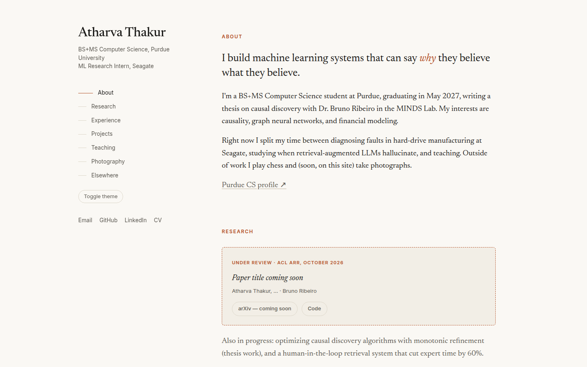
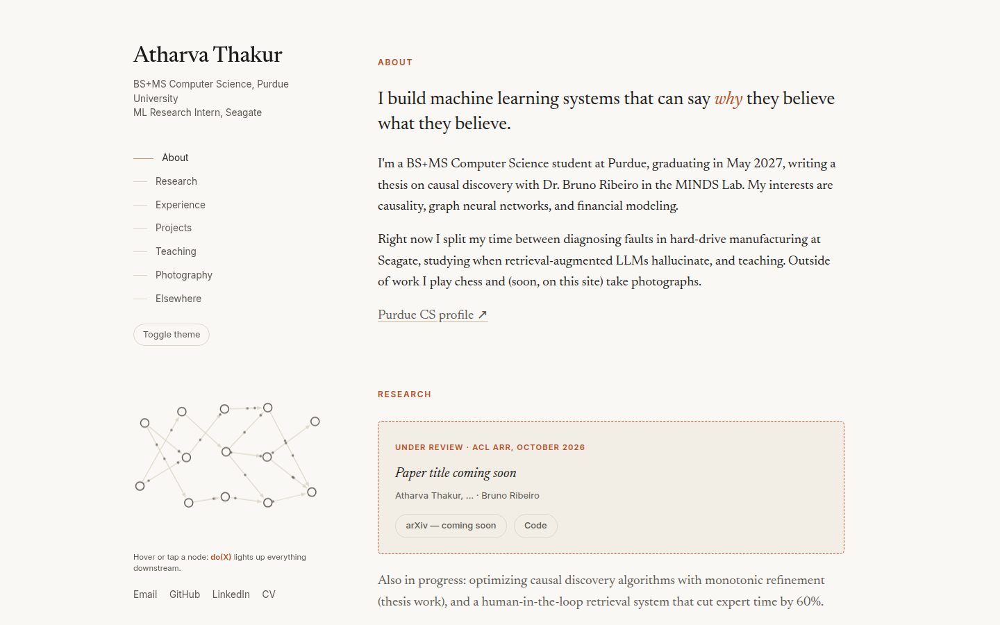
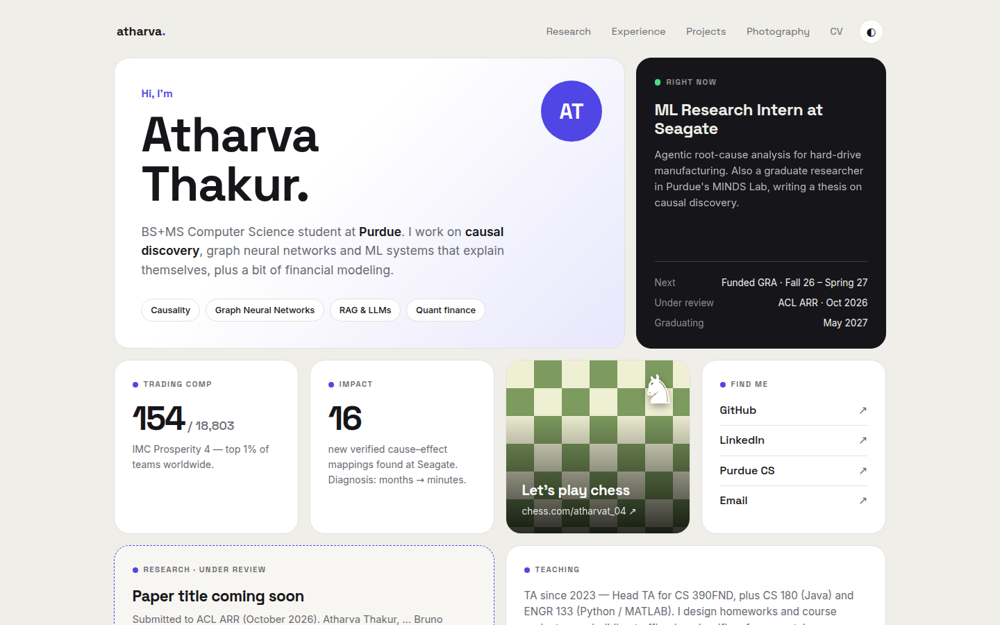
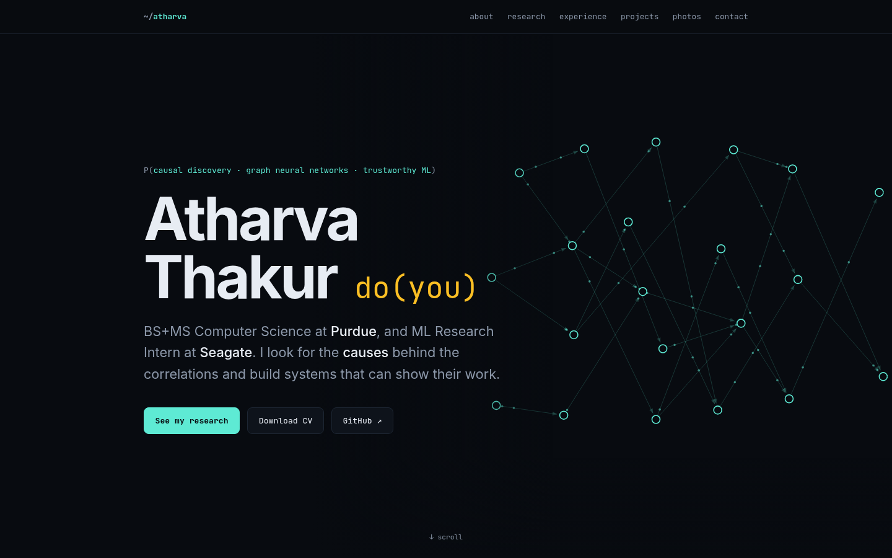

Choose a design
Four takes on the same content. Each folder is fully self-contained: open it, click around, then tell me which one to keep.

A · EditorialQuiet, serif, paper-like. Sticky sidebar, reads like a research homepage.

A + DAG · Editorial with causal graphSame as A, plus a subtle interactive causal DAG under the intro. Follows light/dark mode.

B · BentoModern card grid with stats, a chessboard card, and a project showcase.

C · Causal GraphDark and technical, with an interactive causal DAG as the hero.